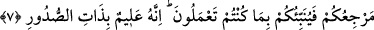

Bundan sonra: “Korkuyla ve umutla Rablerine kulluk ettikleri için vücutları
yataklarından uzak kalır ve kendilerine verdiğimiz rızıktan Allah yolunda
harcarlar. Yaptıklarına karşılık olarak, onlar için ne mutluluklar saklandığını hiç
kimse bilemez.” (Secde, 32/16-17) âyetini okudu.
Daha sonra buyurdu: “Sana bütün işlerin başını, ana direğini ve doruk noktasını
bildireyim mi?” buyurdu Ben: “Evet, yâ Rasûlallah!” dedim. “İşin başı İslâm, direği
namaz, doruğu cihaddır.” buyurdu. Sonra: “Sana bütün bunların kıvamının kendisine
bağlı olduğu şeyi (can damarını) bildireyim mi?” dedi. Ben: “Evet, bildir yâ
Rasûlallah!” dedim. Bunun üzerine Hz. Peygamber (s.a.) dilini tuttu ve: “Şunu koru!”
buyurdu. Ben: “Yâ Rasûlallah! Biz konuştuklarımızdan da sorgulanacak mıyız?” dedim.
“Annen yokluğuna yansın ey Muaz! İnsanları yüzüstü cehenneme sürükleyen, ancak
dillerinin ürettikleridir!” buyurdu.[62]
Sana, söylemek için ağız, düşünmek için gönül vermişler;
Başına göz, kulak koymuşlar
Bunların hepsi inişi yokuşu birbirinden ayırt etmen,
İyiyi kötüye karıştırmaman için
7. Eğer inkâr ederseniz, şüphesiz Allah, size muhtaç değildir. Bununla beraber O,
kullarının küfrüne razı olmaz. Eğer şükrederseniz sizden bunu kabul eder. Hiçbir
günahkâr diğerinin günahını çekmez. Nihâyet hepinizin dönüp gidişi, Rabbinizedir.
Yaptıklarınızı O size haber verir. Çünkü O, kalplerde olan herşeyi hakkıyla
bilendir.
“Eğer” zikredilen Allah’ın türlü nimetlerini gördükten, îmânı ve şükrü gerektiren
O’nun muazzam işlerini tanıdıktan sonra Allah Teâlâ’yı “inkâr ederseniz, şüphesiz
Allah, size” de âlemlere de “muhtaç değildir.” Yâni şunu bilin ki Allah Teâlâ sizin
îmânınıza da şükrünüze de muhtaç değildir, bunların olmamasından da etkilenmez.
“
” herşeyden müstağnî olan, zâtı ve sıfatları bakımından hiçbirşeye muhtaç
olmayandır. Çünkü O her yönden vâcib olandır.
el-Vasît’ta belirtildiği üzere hitap Mekkeli’leredir. Ancak zâhir olan, “Eğer siz ve
yeryüzünde bulunanların tamamı nankörlük etseniz..” (İbrâhim, 14/8) âyetinde
olduğu gibi hitabın bütün insanlara olmasıdır.
“Bununla beraber” Allah Teâlâ’nın irâdesi bazıları hakkında küfre taalluk etse de: